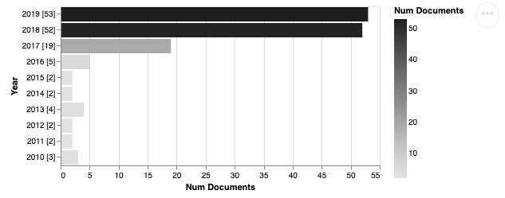
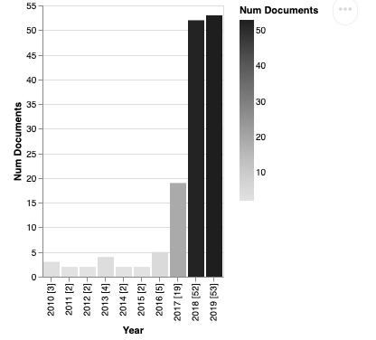
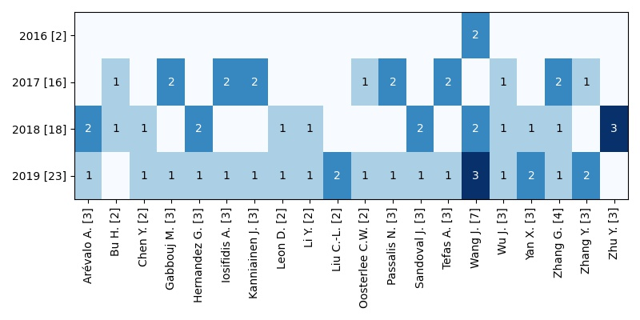
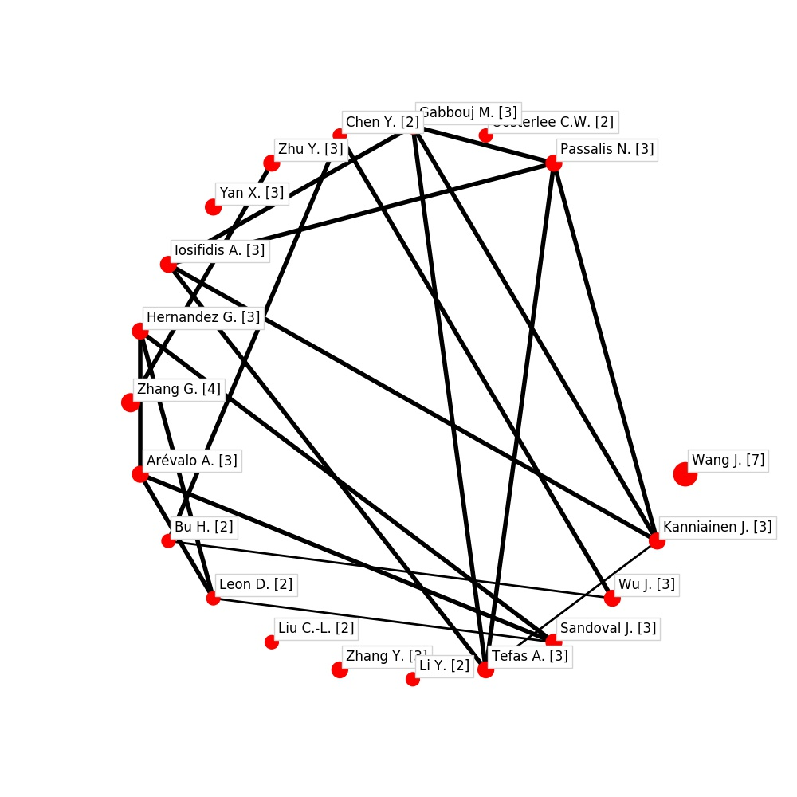
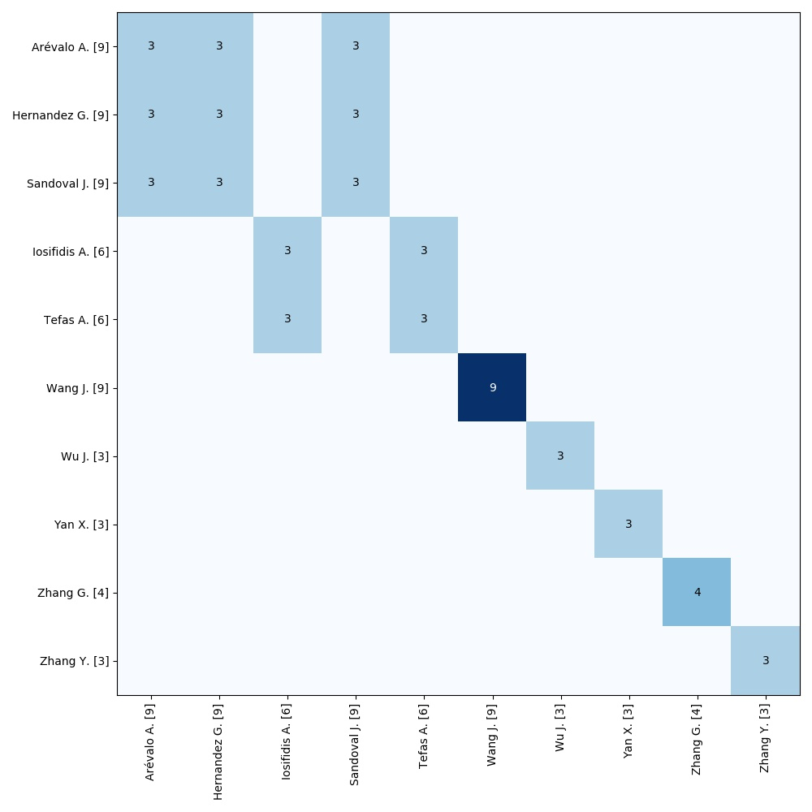
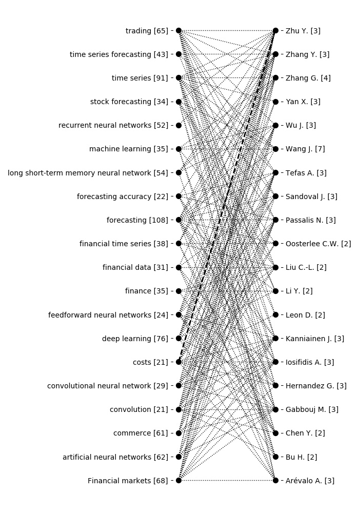
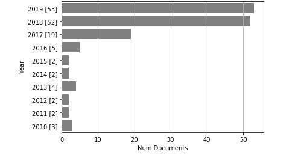
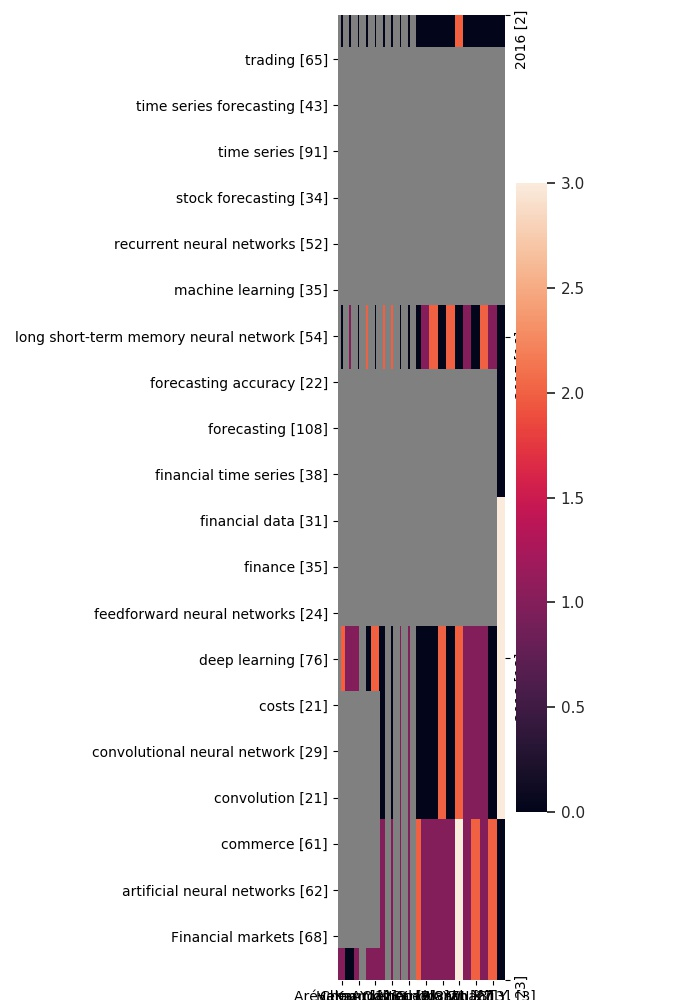
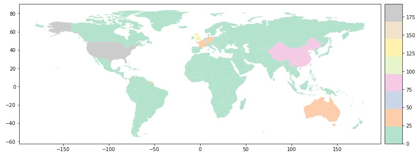

TechMiner.Result¶
-
class
techminer.result.Result(data=None, index=None, columns=None, dtype=None, copy=False, cluster_data=None, call=None)[source]¶ Bases:
pandas.core.frame.DataFrameClass implementing a dataframe with results of analysis.
-
altair_barhplot(color='Greys')[source]¶ - 
>>> import pandas as pd >>> import matplotlib.pyplot as plt >>> from techminer.datasets import load_test_cleaned >>> rdf = load_test_cleaned().data >>> rdf.documents_by_year().altair_barhplot() alt.Chart(...)
-
altair_barplot()[source]¶ Vertical bar plot in Altair.
>>> import pandas as pd >>> import matplotlib.pyplot as plt >>> from techminer.datasets import load_test_cleaned >>> rdf = load_test_cleaned().data >>> rdf.documents_by_year().altair_barplot() alt.Chart(...)
-
altair_circle(ascending_r=None, ascending_c=None, filename=None, **kwds)[source]¶ Altair scatter plot with filled circles for visualizing relationships.
>>> import pandas as pd >>> import matplotlib.pyplot as plt >>> from techminer.datasets import load_test_cleaned >>> rdf = load_test_cleaned().data >>> rdf.auto_corr( ... column='Authors', ... sep=',', ... top_n=30 ... ).altair_circle() alt.Chart(...)

-
altair_heatmap(ascending_r=None, ascending_c=None, filename=None, **kwds)[source]¶ Altair Heatmap Available cmaps:
>>> import pandas as pd >>> import matplotlib.pyplot as plt >>> from techminer.datasets import load_test_cleaned >>> rdf = load_test_cleaned().data >>> rdf.terms_by_year( ... column='Authors', ... sep=',', ... top_n=20).altair_heatmap() alt.Chart(...)

-
barhplot(color='gray', figsize=12, 8)[source]¶ Plots a pandas.DataFrame using Altair.
>>> import pandas as pd >>> import matplotlib.pyplot as plt >>> from techminer.datasets import load_test_cleaned >>> rdf = load_test_cleaned().data >>> rdf.documents_by_year().barhplot()

-
barplot(color='gray', figsize=8, 12)[source]¶ Vertical bar plot in matplotlib.
>>> import pandas as pd >>> import matplotlib.pyplot as plt >>> from techminer.datasets import load_test_cleaned >>> rdf = load_test_cleaned().data >>> rdf.documents_by_year().barplot()

-
chord_diagram(figsize=12, 12, minval=None, R=3, n_bezier=100, dist=0.2)[source]¶ Creates a chord diagram for representing clusters.
>>> import pandas as pd >>> import matplotlib.pyplot as plt >>> from techminer.datasets import load_test_cleaned >>> rdf = load_test_cleaned().data >>> rdf.auto_corr( ... column='Authors', ... sep=',', ... top_n=20).chord_diagram() >>> plt.savefig('./figs/chord-diagram.jpg')

-
heatmap(ascending_r=None, ascending_c=None, figsize=10, 10, cmap='Blues')[source]¶ Heat map.
https://matplotlib.org/3.1.0/tutorials/colors/colormaps.html
‘Greys’, ‘Purples’, ‘Blues’, ‘Greens’, ‘Oranges’, ‘Reds’, ‘YlOrBr’, ‘YlOrRd’, ‘OrRd’, ‘PuRd’, ‘RdPu’, ‘BuPu’, ‘GnBu’, ‘PuBu’, ‘YlGnBu’, ‘PuBuGn’, ‘BuGn’, ‘YlGn’
>>> import pandas as pd >>> import matplotlib.pyplot as plt >>> from techminer.datasets import load_test_cleaned >>> rdf = load_test_cleaned().data >>> rdf.terms_by_year( ... column='Authors', ... sep=',', ... top_n=20).heatmap(figsize=(8,4)) >>> plt.savefig('./figs/heatmap.jpg')
-
map(min_value=None, top_links=None, figsize=10, 10, font_size=12, factor=None, size=25, 300)[source]¶ Draw an autocorrelation, crosscorrelation or factor map.
>>> import pandas as pd >>> import matplotlib.pyplot as plt >>> from techminer.datasets import load_test_cleaned >>> rdf = load_test_cleaned().data >>> rdf.auto_corr( ... column='Authors', ... sep=',', ... top_n=20).map() >>> plt.savefig('./figs/autocorr-map.jpg')
-
network(save=False, name='network.png', corr_min=0.7, node_color='lightblue', edge_color='lightgrey', edge_color2='lightcoral', node_size=None, fond_size=4, figsize=10, 10)[source]¶ This function generates network graph for matrix.
- Parameters
matrix (pandas.DataFrame) – Matrix with variables on indexes and column titles
save (boolean) – If True, the graph will save with the name given
name (str) – Name to save the png file with the image
corr_min (int) – Minimum absolute value for the relationships between variables to be shown in the graph. It is suggested when a correlation matrix is being used
node_color (str) – Color name used to plot nodes
edge_color (str) – Color name used to plot edges with positive weights
edge_color2 (str) – Color name used to plot edges with negative weights
node_size (int) – If None value, the size of the nodes is plotted according to the weights of edges that arrive and leave each one of them. If numeric value, all nodes will be plotted with this given size
fond_size (int) – Node label fond size
figsize (float, float) – size of figure drawn
- Returns
None
-
networkmap(color_edges='grey', color_node='red', color_map='white', edge_map='lightgrey', node_size=None, edge_weight=None)[source]¶ This function generates network graph over map, for matrix with country relations.
- Parameters
matrix (pandas.DataFrame) – Matrix with variables on indexes and column titles
color_edges (str) – Color name used to plot edges
color_node (str) – Color name used to plot nodes
color_map (str) – Color name used to plot map countries
edge_map (str) – Color name used to plot contries border
node_size (int) – If None value, the size of the nodes is plotted according to the weights of edges that arrive and leave each one of them. If numeric value, all nodes will be plotted with this given size
edge_weight (int) – If None value, the weigth of the edges is plotted according to matrix values If numeric value, all edges will be plotted with this given size
- Returns
None
#
-
ocurrence_map(min_value=None, top_links=None, figsize=10, 10, font_size=12, factor=None, size=300, 1000)[source]¶ Cluster map for ocurrence and co-ocurrence matrices.
>>> import pandas as pd >>> import matplotlib.pyplot as plt >>> from techminer.datasets import load_test_cleaned >>> rdf = load_test_cleaned().data >>> rdf.co_ocurrence( ... column_r='Authors', ... column_c='Authors', ... sep_r=',', ... sep_c=',', ... top_n=10 ... ).heatmap() >>> plt.savefig('./figs/heatmap-ocurrence-map.jpg')
>>> rdf.co_ocurrence( ... column_r='Authors', ... column_c='Authors', ... sep_r=',', ... sep_c=',', ... top_n=10 ... ).ocurrence_map( ... figsize=(11,11), ... font_size=10, ... factor = 0.1, ... size=(300,1000) ... ) >>> plt.savefig('./figs/ocurrence-map.jpg')

-
sankey_plot(figsize=7, 10, minval=None)[source]¶ Cross-relation sankey plot.
>>> import pandas as pd >>> import matplotlib.pyplot as plt >>> from techminer.datasets import load_test_cleaned >>> rdf = load_test_cleaned().data >>> rdf.cross_corr( ... column_r='keywords (cleaned)', ... sep_r=';', ... column_c='Authors', ... sep_c=',' ... ).sankey_plot(minval=0.1) >>> plt.savefig('./figs/sankey-plot.jpg')
-
seaborn_barhplot(color='gray')[source]¶ - 
>>> import pandas as pd >>> import matplotlib.pyplot as plt >>> from techminer.datasets import load_test_cleaned >>> rdf = load_test_cleaned().data >>> rdf.documents_by_year().seaborn_barhplot()
-
seaborn_barplot(color='gray')[source]¶ Vertical bar plot in Seaborn.
>>> import pandas as pd >>> import matplotlib.pyplot as plt >>> from techminer.datasets import load_test_cleaned >>> rdf = load_test_cleaned().data >>> rdf.documents_by_year().seaborn_barplot()
-
seaborn_heatmap(ascending_r=None, ascending_c=None, filename=None)[source]¶ Heat map.
https://matplotlib.org/3.1.0/tutorials/colors/colormaps.html
‘Greys’, ‘Purples’, ‘Blues’, ‘Greens’, ‘Oranges’, ‘Reds’, ‘YlOrBr’, ‘YlOrRd’, ‘OrRd’, ‘PuRd’, ‘RdPu’, ‘BuPu’, ‘GnBu’, ‘PuBu’, ‘YlGnBu’, ‘PuBuGn’, ‘BuGn’, ‘YlGn’
>>> import pandas as pd >>> import matplotlib.pyplot as plt >>> from techminer.datasets import load_test_cleaned >>> rdf = load_test_cleaned().data >>> rdf.terms_by_year( ... column='Authors', ... sep=',', ... top_n=20).seaborn_heatmap() >>> plt.savefig('./figs/seaborn_heatmap.jpg')
-
seaborn_relplot(ascending_r=None, ascending_c=None, filename=None)[source]¶ Seaborn relplot plot with filled circles for visualizing relationships.
>>> import pandas as pd >>> import matplotlib.pyplot as plt >>> from techminer.datasets import load_test_cleaned >>> rdf = load_test_cleaned().data >>> rdf.auto_corr( ... column='Authors', ... sep=',', ... top_n=30 ... ).seaborn_relplot(filename='./figs/seaborn_relplot.png')

-
tomatrix(ascending_r=None, ascending_c=None)[source]¶ Displays a term by term dataframe as a matrix.
>>> mtx = Result({ ... 'rows':['r0', 'r1', 'r2', 'r0', 'r1', 'r2'], ... 'cols':['c0', 'c1', 'c0', 'c1', 'c0', 'c1'], ... 'vals':[ 1.0, 2.0, 3.0, 4.0, 5.0, 6.0] ... }) >>> mtx rows cols vals 0 r0 c0 1.0 1 r1 c1 2.0 2 r2 c0 3.0 3 r0 c1 4.0 4 r1 c0 5.0 5 r2 c1 6.0
>>> mtx.tomatrix() c0 c1 r0 1.0 4.0 r1 5.0 2.0 r2 3.0 6.0
-
wordcloud(figsize=14, 7, max_font_size=50, max_words=100, background_color='white')[source]¶ >>> import pandas as pd >>> import matplotlib.pyplot as plt >>> from techminer.datasets import load_test_cleaned >>> rdf = load_test_cleaned().data >>> rdf.documents_by_terms('Source title').wordcloud()

-
worldmap(figsize=14, 7)[source]¶ Worldmap plot with the number of documents per country.
>>> import pandas as pd >>> import matplotlib.pyplot as plt >>> from techminer.datasets import load_test_cleaned >>> rdf = load_test_cleaned().data >>> from techminer.strings import * >>> rdf['Country'] = rdf['Affiliations'].map(lambda x: extract_country(x, sep=';')) >>> rdf.documents_by_terms('Country', sep=';').head() Country Num Documents ID 0 China 83 [[*3*], [*4*], [*6*], [*6*], [*7*], [*10*], [*... 1 Taiwan 20 [[*14*], [*14*], [*17*], [*17*], [*17*], [*17*... 2 United States 17 [[*3*], [*22*], [*23*], [*23*], [*26*], [*26*]... 3 United Kingdom 15 [[*5*], [*7*], [*11*], [*11*], [*11*], [*28*],... 4 India 15 [[*9*], [*50*], [*51*], [*56*], [*56*], [*57*]... >>> rdf.documents_by_terms('Country', sep=';').worldmap()
-
{kind=link}
{kind=link}
{kind=link}
{kind=link}
{kind=link}
{kind=link}
{kind=link}
{kind=link}
{kind=link}